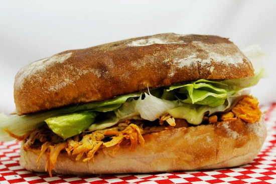

para compartir tus encuentros
con la comida más rica y casera
Sándwiches
Miga
Mis sándwiches de miga son esa perfecta combinación entre finas capas de pan de miga casero blanco o integral (a elección) y unos rellenos elaborados con sabrosos ingredientes super variados.
Son los infaltables de las mesas en las reuniones sociales.
Preparo desde los más clásicos, como el simple de jamón y queso; hasta los más desafiantes, como son los triples para las opciones gourmet.
Cada bocado ofrece una experiencia única.
Satisfacción asegurada en cada deliciosa capa.
Sándwiches
Pollo

Estos son los sándwiches más jugosos e irresistibles y tienen un sabor inigualable.
Los elaboro a base de pechuguitas de pollo super tiernas y sazonadas con especias; y los acompaño con ingredientes y verduras muy frescas.
No puede faltar el pan casero super esponjoso para sostener y crear así, una experiencia deliciosa.
Cada mordisco es un festín de sabores perfecto para satisfacer tus deseos.
Chips
Rellenos
Mis chips son esponjosos y dulzones, clásicos e infaltables, de pan tipo viena casero.
Son una deliciosa alternativa al crujiente pan tradicional.
Los elaboro de forma muy artesanal; resultando su sabor ser muy suave, con una ligera salinidad.
Los relleno de forma clásica o gourmet, según la ocasión y a gusto de la persona.
Los de jamón y queso clásicos, untados con crema y mayonesa, no fallan; son exquisitos y tienen una mezcla agridulce super tentadora.
Salchichas
Camisa
Las salchichitas envueltas son un clásico que provienen y se mantienen de aquellos cumpleaños de mi niñez.
Las preparo con las salchichas más jugosas y de primera calidad dentro del mercado; las envuelvo en una masa super crujiente casera, que previamente dejo que se dore muy bien para que tome su color tostado.
Me gusta servirlas acompañadas por sabores atípicos; es por ello que preparo salsas especiales para degustarlas.
Son ideales como aperitivo o para complementar las comidas dándoles a éstas un toque delicioso y reconfortante.
Brusquetas
Gourmet
Sabores clásicos y mediterráneos con la mejor calidad en cocina gourmet, también son parte de Corazón de Chocolate.
Preparo el pan crujiente, bien tostado, y lo cubro con tomatitos cherries muy frescos; ajo, albahaca y aceite de oliva de alta calidad.
Cada brusqueta es una obra maestra de sabores, balanceados para que lo deleite tu paladar.
Son el aperitivo más elegante o la riquísima entrada más solicitada para acompañar esos eventos inolvidables.
Empanadas
Caseras